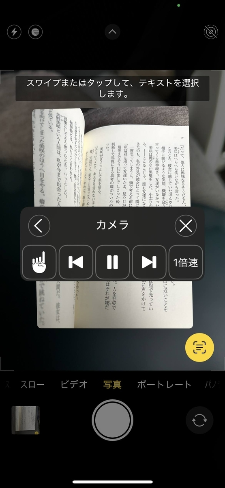

投稿日: 2025/07/09 12:07:06
カテゴリ: ライフハック
サムネイル: 
目の前にふと、読みたい文庫があったとして、でも読む時間もなければ眼精疲労で読めなかったりするとしよう。 でもどうしても読みたくて、電子書籍のように自動で読み上げてくれたらなーと思ったら…？ 実はiPhoneならそれを実現してくれる。
まず、電源ボタンのトリプルタップで画面上の文字を読み上げてくれるようにしておく。これをしておくと、Kindleなど画面に文字があるものなら何でも読み上げられるようになる。「読み上げコントローラ」をオンにしておいて、私はさらにアクセシビリティのトリプルタップで読み上げコントローラをいつでもON/OFFできるようにしている。方法は以下が詳しい。
トリプルタップなどへのアクションの登録は、以下が詳しい。
「前準備」さえできていればあとは簡単。カメラを起動すると、右下に文字化 (OCR) してくれるボタンがある。このボタンを押して読み上げ可能な状態にして、あとは事前に設定した電源ボタンのトリプルタップなどで、「読み上げコントローラ」を起動する。
するとあら不思議、スラスラと読み上げてくれる。読み上げの声をSiriにしておけば、スムーズで聞き取りやすい朗読をしてくれる。
これなら、仕事をしながらでもたまに１ページごとにカメラを向けて読み上げれば、ラジオのように好きな文庫を読み上げてもらうことができる。
ちなみにカメラが起動しっぱなしになって電池がもったいないので、読み上げ中は画面を閉じておくと良い。
すごい時代になったもんだ。まるでドラえもんようようにいろんな夢が叶う時代になってすごい。
おしまい。